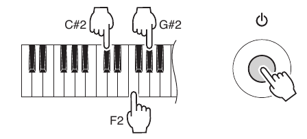

Согласно сервисной документации, вход в режим тестирования происходит при включении синтезатора при определенных условиях. Нужно сделать следующее:
1. Выключить синтезатор.
2. Выкрутить громкость на максимум.
3. Зажать клавиши на нотах C#2, F2, G#2 и нажать кнопку [STANDBY / ON]

4. На экране должна зажечься надпись Test.
5. Клавишами [Tenkey -] и [Tenkey +] выбрать тестирующую программу.
6. Кнопкой [START / STOP] запустить тестирование.
Что можно протестировать:
001: Version
Displays version of the ROM. Using the tenkeys, each data version can be displayed as follows.
[Tenkey 1] Main Program Version “∗∗∗ Main”
[Tenkey 2] Boot Program Version “∗∗∗ Boot”
[Tenkey 3] Style Data Version “∗∗∗ Style”
[Tenkey 4] Song Data Version “∗∗∗ Song”
[Tenkey 5] Voice Parameter Version “∗∗∗ Param”
[Tenkey 6] Wave Data Version “∗∗∗ Wave”
Where ∗∗∗ - it's Version
002: Mem1 All
Checks the ROM, RAM and FROM connected to the CPU bus.
Make sure that “Mem1 OK” is displayed on the LCD.
If the test result is OK, the tests “003: Rom Chk1”, “004: Ram Chk1” and "005:FRom Chk1” can be skipped.
003: Rom Chk1
Checks the ROM connected to the CPU bus.
Make sure that “Rom OK” is displayed on the LCD.
004: Ram Chk1
Checks the RAM connected to the CPU bus.
Make sure that “Ram OK” is displayed on the LCD.
005: FRomChk1
Checks the FROM connected to the CPU bus.
Make sure that “FRom OK” is displayed on the LCD.
008: TG1 Chk
Plays each key automatically in the order of scale (auto-scaling). (32 notes from C2 to G4 will be played.)
Make sure that there is no abnormal sounds or noise. When the auto-scaling is finished, “TG1 End” will be shown. Press a key to play a sound. (Single note, the key pressed first will be played)
009: Pit Chk
Checks pitch accuracy.
Connect the frequency counter to the [PHONES/OUTPUT] jack. (Either L or R)
Make sure that the correct signal is output. (441.0 Hz ± 0.2 Hz)
Amount of volume decay
Connect the level meter (with JIS-C fi lter) to the L/R of the [PHONES/OUTPUT] jack. (33 Ω load)
Turn the [MASTER VOLUME] to the minimum and measre the amount of volume decay.
· PHONES L, R: -70 dBu or less
010: Output R
Connect the level meter (with JIS-C filter) to the L/R of the [PHONES/OUTPUT] jack.
(33 Ω load)
Set the [MASTER VOLUME] to the maximum level and check the output level.
· PHONES R: –1.0 dBu ± 2 dB
· PHONES L: –45.0 dBu or less
011: Output L
Connect the level meter (with JIS-C filter) to the L/R of the [PHONES/OUTPUT] jack.
(33 Ω load)
Set the [MASTER VOLUME] to the maximum level and check the output level.
· PHONES L: –1.0 dBu ± 2 dB
· PHONES R: –45.0 dBu or less
021: SW Chk
Checks the switches on the panel. Press the switches as shown in the LCD. When a switch is pressed, a sound is played at the prescribed pitch. (Refer to the Switch test item list on the next page.)
Make sure that “SW OK” is displayed on the LCD when all the switches are pressed as indicated. To cancel the running test, press the [DEMO/BGM] button or the lowest key (white key C1) to return to the item selection display.
025: LCD On
Make sure that all the dots on the LCD are turned on.
026: LCD Off
Make sure that all the dots on the LCD are turned off.
029: PD1 Chk
Connect a footswitch (FC-4 or FC-5) to the [SUSTAIN] jack.
Check that C3 sound is played when the [Start/Stop] button is pressed with the pedal depressed and that C4 sound is played when the pedal is released. Depress the pedal again and the sound will be stopped.
Make sure that “PD1 OK” is displayed on the LCD.
047: Rom Chk2
Checks the ROM connected to the CPU bus.
Make sure that “Rom OK” is displayed on the LCD.
It will take about 12 seconds for the check.
048: Ram Chk2
Checks the RAM connected to the CPU bus.
Make sure that “Ram OK” is displayed on the LCD.
049: FRomChk2
Checks the FROM connected to the CPU bus.
Make sure that “FRom OK” is displayed on the LCD.
It will take about 95 seconds for the check.
052: Factory
Initializes the entire backup area to reset to the factory default.
“Fact” is displayed on the LCD during the test.
“Fact End” is displayed on the LCD when the test is finished.
053: TestExit
This will leave the test program and change to the play mode.